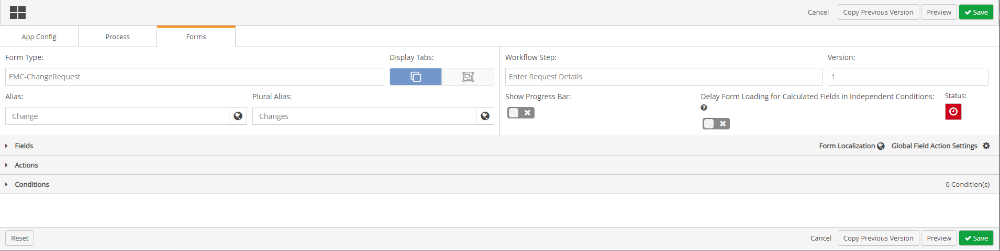
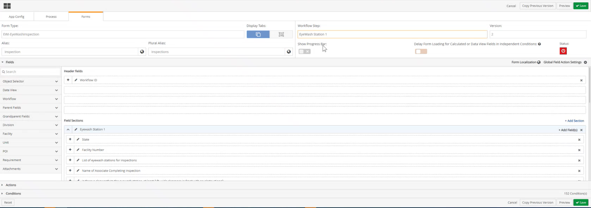
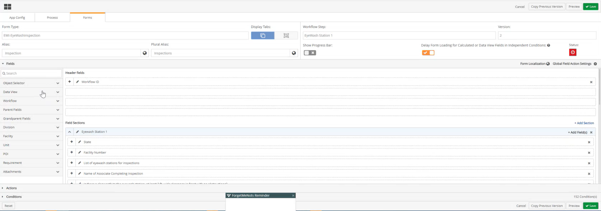
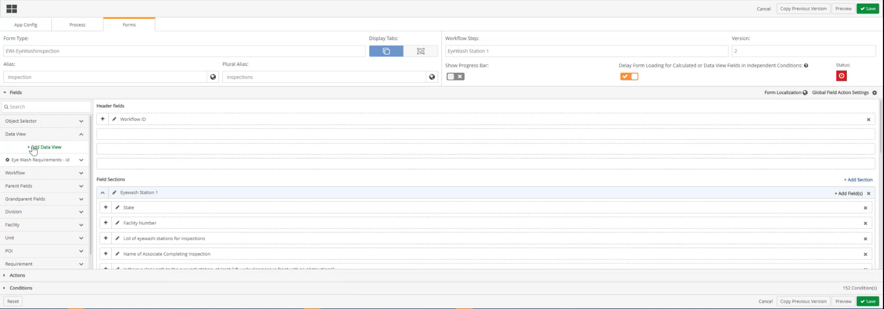
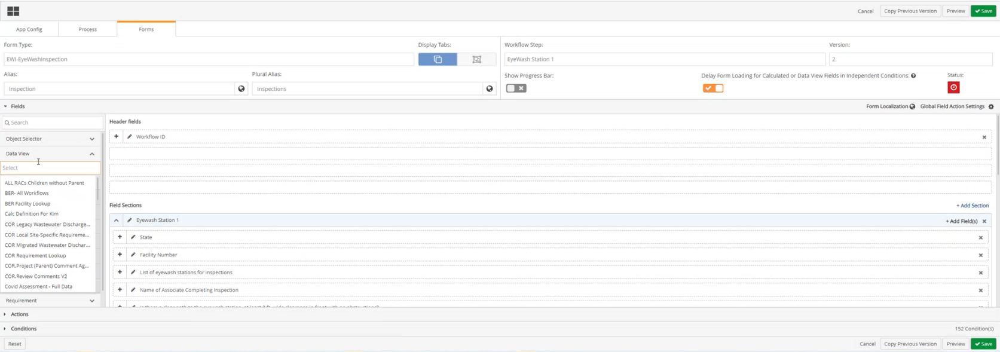
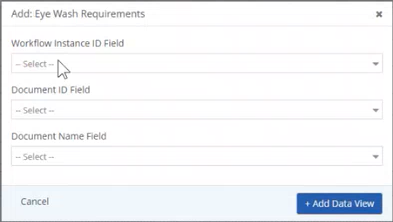
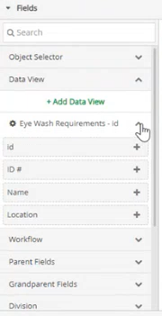
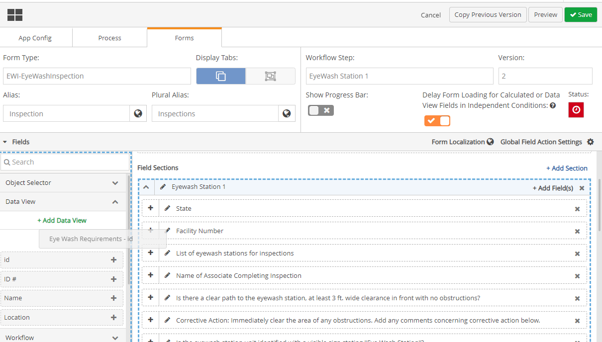

Adding Data View tables to Form Fields allows users to include templates that can be used for various workflow use cases. This includes variables such as facility information, lists of assets, and attributes associated with the listed assets. Providing this information in a tabular format allows information to be presented in an efficient manner for end users. Data View tables allow users to have all related workflow items to be displayed in one table, rather than in multiple fields.
To add Data View tables in Form Fields:
From the main menu dropdown, select Designer to open Forms Designer.
Click the Forms tab.
Click the Form Type dropdown textbox and select a child workflow type that will be generated as a field action associated with fields on the parent form(s).
In the Alias and Plural Alias fields, ensure terms in plain language have been substituted for the workflow type so that users can understand which instances of the workflow type is being represented. For example, replace “EII-Action” with “Action” and “Actions”.
Repeat this step for all child workflow types that will be generated as a field action on the parent forms(s).
Click the Workflow Step dropdown textbox and select a workflow step where forms are present.

Click the Fields ribbon. The Fields ribbon will expand with a menu of Fields below it, and two sections display to the right, Header Fields, and Field Sections.

In the menu of Fields on the left of the Fields section, Click Data View to expand the Data View Menu.

Click + Add Data View.

A search bar displays for you to type in the name of the data view table you want to add.

As you type in the characters in the search bar, the list of Data view tables updates to match what you are typing.
Click the Data view table you want to add. A pop-up window will display with Add: and the name of the data view table following as the header of the pop-up.

Fill in the following fields by clicking the dropdown textbox and selecting a value:
Workflow Instance ID Field
Document ID Field
Document Name Field
Workflow Instance ID Field is required, the other two fields are optional and can be filled in if a document is required.
Click + Add Data View. The Data View table is added to the left menu.
When the Data View table in the left column is clicked, the menu expands with the columns of the data view table displayed below. The names of these Data view columns can be changed.

The Data view columns and column names cannot be changed in Form Designer but can be changed in the data view itself via the Data Preparation Tool.
The Workflow Instance ID used in the Data Preparation Tool, is the same Workflow Instance ID that is used to find the Data View table in the WAB, but will not be displayed on the WAB.
To add the Data View table to the form, click the Data View table name and drag it to the appropriate Field Section.

To add individual fields from the Data view to the form click and drag the column names that display below the Data View table in the menu.